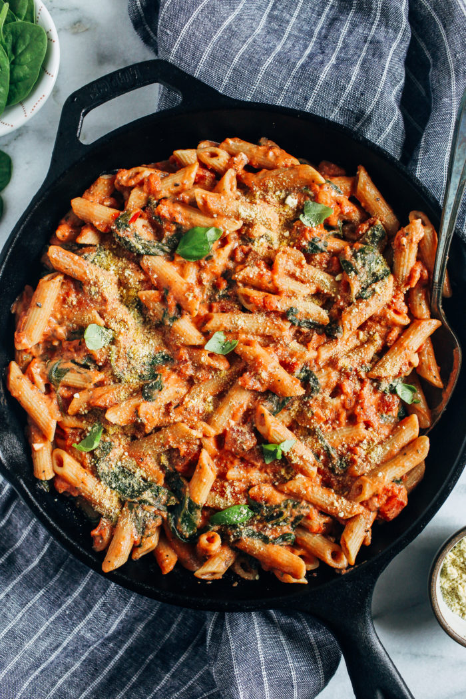

Pasta Recipe

Description
Creamy Tomato Spinach Pasta- made with just 10 ingredients in less than 30 minutes, this recipe will make pasta night a breeze! (vegan + gluten-free).
Ingredients
- Onion and Garlic
- Crushed Tomatoes
- Oregano and Basil
- Baby Spinach
- Penne Pasta
- Dairy-free Cream Cheese
Steps
- Cook pasta as directed. Strain and set aside.
- Sauté garlic and onion then add the spinach and cook until wilted.
- Pour in the crushed tomatoes and the seasonings. Bring to a low simmer.
- Stir in the cream cheese until melted and smooth.
- Add the cooked pasta and stir to combine. Serve warm and enjoy!